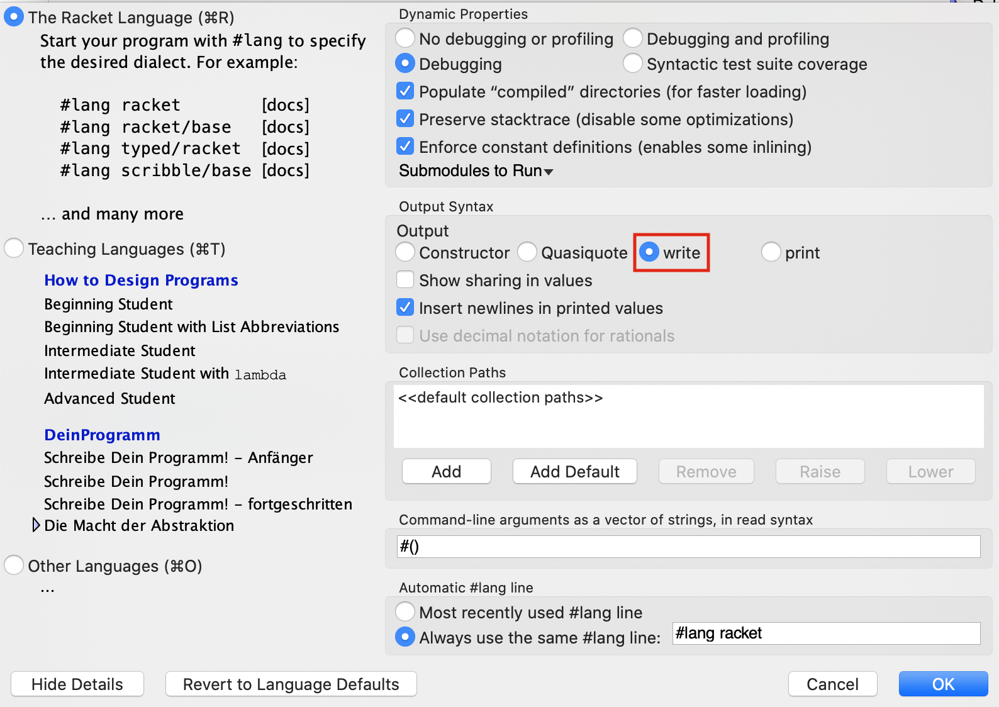
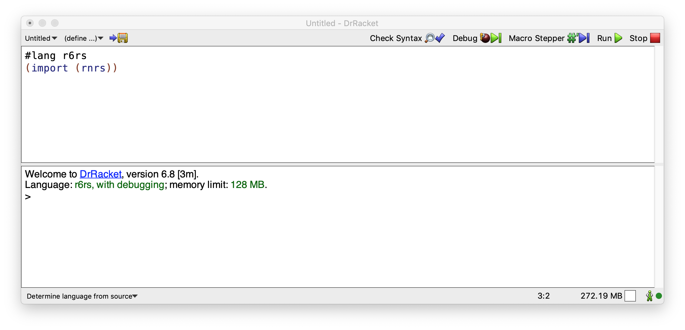

Seminario 1: Seminario de Scheme¶
1. El lenguaje de programación Scheme¶
Scheme es un lenguaje de programación que surgió en los laboratorios del MIT en 1975, cuando Guy L. Steele y Gerarld J. Sussman buscaban un lenguaje con una semántica muy clara y sencilla.
Scheme es un dialecto de Lisp, es un lenguaje interpretado, muy expresivo y soporta varios paradigmas. Estuvo influenciado por el cálculo lambda. El desarrollo de Scheme ha sido lento, ya que la gente que estandarizó Scheme es muy conservadora en cuanto a añadirle nuevas características,porque la calidad ha sido siempre más importante que la utilidad empresarial. Por eso Scheme es considerado como uno de los lenguajes mejor diseñados de propósito general. Aprender Scheme hará que seáis mejores programadores cuando utilicéis otros lenguajes de programación.
1.1. El lenguaje de programación Racket¶
¿Qué vamos a aprender? ¿Racket o Scheme? La respuesta es: Scheme trabajando en Racket.
Racket se diseñó en 1995 basándose en Scheme y ampliándolo con nuevas funcionalidades, como la posibilidad de extenderlo con librerías. El lenguaje contiene librerías muy útiles (librerías gráficas, de conexión a servidores HTTP, de conexión a bases de datos, etc.) con las que se moderniza el lenguaje original y se convierte en un lenguaje práctico para desarrollar todo tipo de aplicaciones, desde videojuegos a servidores web. Sin embargo, nosotros sólo vamos a usar Racket para aprender la parte que corresponde al núcleo original de Scheme.
1.2. El entorno de programación DrRacket¶
Veamos una pequeña introducción al entorno de programación que proporciona DrRacket. Puedes encontrar más información en la documentación original.
1.2.1. Descarga de DrRacket¶
DrRacket es multiplataforma y puede ejecutarse en Linux, MacOS o Windows. Puedes descargarte la última versión en el siguiente enlace:
1.2.2. Configuración de DrRacket¶
Para poder trabajar correctamente con DrRacket debemos asegurarnos que
el lenguaje activo es The Racket Language y que la sintaxis de la
salida tiene activada la opción write, como aparece en la siguiente
imagen:

Podemos modificar esa opción con los siguientes menús:
Language > Choose Language (seleccionamos The Racket Language) > Show details > Output Syntax > write
Esta opción determina la sintaxis de la salida del intérprete del lenguaje, que va a ser uno de los elementos fundamentales para aprender Scheme.
Aviso
Una vez seleccionadas estas opciones, la configuración se guarda en las preferencias del usuario. En los laboratorios de la EPS hay que realizar la configuración al comienzo de cada sesión.
Cuando lanzamos DrRacket, vemos que tiene tres partes: una fila de botones arriba, dos paneles de edición en el medio y una barra de estado abajo.

El panel de edición superior es la ventana de definiciones. Se utiliza
para implementar funciones, como la función cuadrado en el ejemplo. El
panel inferior, llamado ventana de interacción, se utiliza para
evaluar expresiones interactivamente, usando el intérprete de
Racket. Pulsando el botón Run, se evalúa el programa de la ventana
de definiciones, haciendo que esas definiciones estén disponibles en
la ventana de interacción. Así, dada la definición de cuadrado,
después de pulsar Run, podemos teclear la expresión (cuadrado 2) en
el intérprete, se evaluará y mostrará el resultado, en este caso 4.
DrRacket soporta muchos lenguajes y dialectos de Scheme. Nosotros vamos a utilizar el lenguaje por defecto, el lenguaje Racket. Para ello no es necesario realizar nada, sólo asegurarnos de lo siguiente:
-
En la parte inferior de la ventana aparece "Determine language from source"
-
El fichero que se está editando en el panel de edición comienza con la línea:
#lang racket -
Finalmente, si pulsamos el botón Run (Ejecutar) comprobaremos que se carga ese lenguaje en el intérprete.

1.2.3. Cómo escribir en el intérprete¶
En la ventana inferior se encuentra el intérprete de Racket. El intérprete realiza un bucle en el que se lee una expresión, se evalúa su resultado y se imprime. A este tipo de bucle se denomina en inglés REPL (Read-Evaluate-Print Loop).
Las expresiones que escribimos en el intérprete se guardan en un histórico. Podemos recuperar las expresiones anteriores y movernos por ese histórico usando las siguientes combinaciones de teclas:
CTRL+ flecha arriba/abajo
Puede ser que esa combinación de teclas esté asignada a otras funciones en tu configuración de sistema operativo. Puedes cambiar esa configuración o usar la combinación alternativa de DrRacket:
ESC+p(previous) /n(next)
También podemos seleccionar con el cursor una expresión y al pulsar
RETURN se copia automáticamente en el prompt.
2. El lenguaje Scheme¶
2.1. Vamos a empezar probando algunos ejemplos¶
Scheme es un lenguaje interpretado. Vamos a lanzar DrRacket y teclear en la ventana de interacción algunas expresiones. El intérprete analizará la expresión y mostrará el valor resultante de evaluarla.
2 ; ⇒ 2
(+ 2 3) ; ⇒ 5
(+ (* 2 3) (- 3 1)) ; ⇒ 8
Las expresiones en Scheme tienen una forma denominada notación prefija de Cambridge (el nombre de Cambridge es por la localidad Cambridge, Massachusets, donde reside el MIT, lugar en el que se ideó el Lisp), en la que la expresión está delimitada por paréntesis y el operador va seguido de los operandos. La sintaxis es la siguiente:
(<función> <arg1> ... <argn>)
En Scheme podemos interpretar los paréntesis abiertos ‘(’ como evaluadores o lanzadores de la función que hay a continuación. La forma que tiene Scheme de evaluar una expresión es muy sencilla:
- Evalúa cada uno de los argumentos
- Aplica la función nombrada tras el paréntesis a los valores resultantes de la evaluación anterior
(+ (* 2 3) (- 3 (/ 12 3)))
⇒ (+ 6 (- 3 (/ 12 3)))
⇒ (+ 6 (- 3 4))
⇒ (+ 6 -1)
⇒ 5
Existen funciones que admiten un número variable de argumentos, como la suma o la resta:
(+) ; ⇒ 0
(+ 2 4 5 6) ; ⇒ 17
(- 10 2 3) ; ⇒ 5
En el caso de la resta, los argumentos se van restando de izquierda a derecha (al primer argumento se le resta el segundo, al resultado se le resta el tercero, y así sucesivamente):
(- 4 5 4 8) ; ⇒ -13
(- 4 (+ 5 4) 8) ; ⇒ -13
(- 4 (+ 5 4 8)) ; ⇒ -13
En Scheme los términos función y procedimiento significan lo mismo y se usan de forma intercambiable. Son ejemplos de funciones o procedimientos: +, -, \, *. En Scheme la evaluación de una función siempre devuelve un valor, a no ser que se produzca un error que detiene la evaluación:
(* (+ 3 4) (/ 3 0))
; Error /: division by zero
2.2. Definiendo variables y funciones¶
Scheme es un lenguaje multiparadigma pero principalmente funcional, y una de sus características principales es que los programas se construyen mediante la definición de funciones.
Podemos utilizar en el intérprete la forma especial define para
definir variables y funciones. En clase de teoría se explica cómo es el
funcionamiento del define, pero por el momento lo utilizaremos para
definir variables asociadas a valores, y para implementar funciones.
Podemos definir variables en la ventana de interacción para facilitar la escritura de expresiones:
(define a (+ 2 (* 3 4)))
a ; ⇒ 14
(+ a (* 2 3)) ; ⇒ 20
Existen identificadores (en Scheme los llamamos símbolos) que ya
están definidos en el intérprete de Racket, por ejemplo pi:
pi ; ⇒ 3.141592653589793
(sin (/ pi 2)) ; ⇒ 1.0
Para implementar una función también se utiliza define, con la siguiente sintaxis:
(define (<nombre-funcion> <args>)
<cuerpo-funcion>
)
Por ejemplo, vamos a implementar una función que toma dos números como parámetros y devuelve la suma de sus cuadrados:
(define (suma-cuadrados x y)
(+ (* x x) (* y y)))
Si llamamos a la función pasando el 2 y el 3 como parámetros, la función devuelve el número 13:
(suma-cuadrados 2 3) ; ⇒ 13
Nota
A diferencia de la mayoría de lenguajes de programación, en Scheme
no se utiliza la palabra return para indicar que una función
devuelve un valor. Las funciones se definen con una única
expresión y el resultado calculado en esa expresión es el que
siempre se devuelve.
2.3. Lenguaje débilmente tipado¶
Vamos a comprobar una característica muy importante de Scheme: ser un lenguaje débilmente tipado. Por esto entendemos, entre otras cosas, que las variables, funciones y argumentos no tienen un tipo declarado. Es posible usar valores de distintos tipos de datos para asignar sucesivamente a una misma variable (en el caso de un lenguaje imperativo) o para pasar como parámetro a una misma función (en el caso de un lenguaje funcional). Por ejemplo, JavaScript o PHP son también lenguajes débilmente tipados imperativos.
Veamos cómo funciona esto en Scheme usando la función anterior como ejemplo.
(define (suma-cuadrados x y)
(+ (* x x) (* y y)))
Vemos que los argumentos x e y no tienen ningún tipo. Si se
invoca a la función pasando algún dato que no sea un número, el
intérprete no detectará ningún error y permitirá asignar a los
argumentos x e y esos datos. El error se produce en el momento en
que se intenta evaluar la multiplicación.
Lo podemos comprobar con el siguiente ejemplo, en el que se muestra el mensaje de error resultante:
> (suma-cuadrados 10 "hola")
*: contract violation
expected: number?
given: "hola"
argument position: 1st
other arguments...:
Veremos más adelante que hay distintos tipos de números que podemos operar usando la división, la suma y la multiplicación. La función definida va a funcionar bien para todos ello.
Podemos pasar a la función números enteros, números reales o incluso fracciones:
(suma-cuadrados 2 5) ; ⇒ 29
(suma-cuadrados 2.4 5.8) ; ⇒ 39.4
(suma-cuadrados (/ 2 3) (/ 3 5)) ; ⇒ 181/225
En la última expresión también pueden pasarse directamente los números fracionales, el intérprete de Scheme entiende esa notación:
(suma-cuadrados 2/3 3/5) ; ⇒ 181/225
2.4. Tipos de datos simples¶
Las primitivas de Scheme consisten en un conjunto de tipos de datos, formas especiales y funciones incluidas en el lenguaje. A lo largo del curso iremos introduciendo estas primitivas.
Vamos a revisar algunos tipos de datos simples de Scheme, así como algunas funciones primitivas para trabajar con valores de esos tipos.
- Booleanos
- Números
- Caracteres
2.4.1. Booleanos¶
Un booleano es un valor de verdad, que puede ser verdadero o falso. En
Scheme, tenemos los símbolos #t y #f para expresar verdadero y falso
respectivamente, pero en muchas operaciones se considera que cualquier
valor distinto de #f es verdadero. Ejemplos:
#t ; verdadero
#f ; falso
(> 3 1.5) ; ⇒ #t
(= 3 3.0) ; ⇒ #t (igualdad matemática)
(equal? 3 3.0) ; ⇒ #f (igualdad de tipo)
(or (< 3 1.5) #t) ; ⇒ #t
(and #t #t #f) ; ⇒ #f
(not #f) ; ⇒ #t
(not 3) ; ⇒ #f (permite cualquier argumento;
; sólo devuelve #t cuando el argumento es #f)
2.4.2. Números¶
La cantidad de tipos numéricos que soporta Scheme es grande, incluyendo enteros de diferente precisión, números racionales, complejos e inexactos. Por ejemplo:
(/ 1 3) ; ⇒ Devuelve la fracción 1/3
(+ 1/3 1/3) ; ⇒ 2/3
(+ 2 3 4 2) ; ⇒ 11 (la función + admite un número variable de argumentos)
(+ 1/3 0.0) ; número real con infinita precisión ⇒ 0.3333333333333333
(* (+ 1/3 0.0) 3) ; ⇒ 1
(sqrt -1) ; ⇒ 0+1i (número imaginario)
(+ 3+2i 2-i) ; ⇒ 5+1i (operaciones con números imaginarios)
2.4.2.1. Algunas primitivas sobre números¶
(<= 2 3 3 4 5) ; ⇒ #t (los argumentos están en orden creciente)
(max 3 5 10 1000) ; ⇒ #1000
(/ 22 4) ; Devuelve una fracción
(quotient 22 4) ; ⇒ 5 (cociente de la división entera)
(remainder 22 4) ; ⇒ 2 (resto de la división entera)
(equal? 0.5 (/ 1 2)) ; ⇒ #f (distintos tipos de datos)
(= 0.5 (/ 1 2)) ; ⇒ #t (igualdad matemática)
(abs (* 3 -2)) ; ⇒ 6 (valor absoluto)
(sin 2.2) ; relacionados: cos, tan, asin, acos, ata
(expt 4 2) ; ⇒ 16 (exponente: 4 elevado a 2)
2.4.2.2. Funciones de redondeo¶
; (floor x) devuelve el entero más grande no mayor que x
; (ceiling x) devuelve el entero más pequeño no menor que x
; (truncate x) devuelve el entero más cercano a x cuyo valor absoluto
; no es mayor que el valor absoluto de x
; (round x) devuelve el entero más cercano a x, redondeado
(floor -4.3) ; ⇒ -5.0
(floor 3.5) ; ⇒ 3.0
(ceiling -4.3) ; ⇒ -4.0
(ceiling 3.5) ; ⇒ 4.0
(truncate -4.3) ; ⇒ -4.0
(truncate 3.5) ; ⇒ 3.0
(round -4.3) ; ⇒ -4.0
(round 3.5) ; ⇒ 4.0
2.4.2.3. Predicados sobre números¶
Se denominan predicados a funciones que devuelven un booleano.
(positive? -4) ; ⇒ #f (-4 no es positivo)
(negative? -4) ; ⇒ #t (-4 es negativo)
(zero? 0.2) ; ⇒ #f (comprueba si el resultado es cero)
(even? 2) ; ⇒ #t (comprueba si es par)
(odd? 3) ; ⇒ #t (comprueba si es impar)
En Scheme tenemos predicados que nos permiten comprobar el tipo de un parámetro. En el caso de los números, el tipo de número:
(number? 1) ; ⇒ #t (el argumento 1 es un número)
(integer? 2.3) ; ⇒ #f (el argumento 2.3 no es un entero)
(integer? 4.0) ; ⇒ #t (el número 4.0 matemáticamente es idéntico
; al número 4)
(real? 1) ; ⇒ #t
2.4.3. Caracteres¶
Se soportan caracteres internacionales y se codifican en UTF-8.
#\a
#\A
#\space
#\ñ
#\á
2.4.3.1. Operaciones sobre caracteres¶
(char<? #\a #\b) ; ⇒ #t (el carácter #\a es anterior al #\b)
(char-numeric? #\1) ; ⇒ #t (el carácter #\1 es un número)
(char-alphabetic? #\3) ; ⇒ #f (el carácter #\3 es un número)
(char-whitespace? #\tab) ; ⇒ #t (el carácter tabulador es un espacio
; en blanco)
(char-upper-case? #\A) ; ⇒ #t (el carácter #\A es una letra mayúscula)
(char-lower-case? #\a) ; ⇒ #t (el carácter #\a es una letra minúscula)
(char-upcase #\ñ) ; ⇒ #\Ñ (transforma la letra a mayúsculas)
(char-downcase #\A) ; ⇒ #\a (transforma la letra a minúsculas)
(char->integer #\space) ; ⇒ 32 (el carácter espacio ocupa la posición
; 32 en la lista de caracteres)
(integer->char 32) ; ⇒ #\space (igual que antes pero a la inversa)
(char->integer (integer->char 5000)) ; ⇒ 5000
2.5. Tipos de datos compuestos¶
Scheme tiene también un conjunto de tipos de datos compuestos, que permiten aglutinar elementos simples de los tipos de datos vistos anteriormente.
- Cadenas
- Parejas
- Listas
Estos dos últimos los veremos en detalle en futuras clases de teoría.
2.5.1. Cadenas¶
Las cadenas son secuencias finitas de caracteres.
"hola"
"La palabra \"hola\" tiene 4 letras"
Constructores de cadenas¶
(make-string 5 #\o) ; ⇒ "ooooo" (función constructora que recibe un
; entero y un carácter)
(string #\h #\o #\l #\a) ; ⇒ "hola" (función constructora que recibe
; un número variable de caracteres)
Operaciones con cadenas¶
(substring "Hola que tal" 2 4) ; ⇒ "la" (subcadena que va de la
; posición 2 a la 4, sin llegar a ella)
(string? "hola") ; ⇒ #t (predicado que comprueba que el argumento es
; una cadena)
(string->list "hola") ; ⇒ (#\h #\o #\l #\a) (devuelve una lista de
; caracteres)
(string-length "hola") ; ⇒ 4 (longitud de la cadena)
(string-ref "hola" 0) ; ⇒ #\h (carácter en la posición 0)
(string-append "hola" "adios") ; ⇒ "holaadios" (concatenación de cadenas)
Comparadores de cadenas¶
(string=? "Hola" "hola") ; ⇒ #f
(string=? "hola" "hola") ; ⇒ #t
(string<? "aab" "cde") ; ⇒ #t (se compara usando el orden lexicográfico)
(string>=? "www" "qqq") ; ⇒ #t
2.5.2. Parejas¶
Elemento fundamental de Scheme. Es un tipo compuesto formado por dos elementos (no necesariamente del mismo tipo).
(cons 1 2) ; ⇒ (1 . 2) (cons crea una pareja)
(cons #t 3) ; ⇒ (#t . 3) (elementos de tipos diferentes)
(car (cons "hola" 2)) ; ⇒ "hola" (elemento izquierdo de la pareja)
(cdr (cons "bye" 5)) ; ⇒ 5 (elemento derecho de la pareja)
Cuando evaluamos las expresiones anteriores en el intérprete, Scheme muestra el resultado de construir la pareja con la sintaxis:
(elemento izquierdo . elemento derecho)
Por ejemplo:
(cons 1 2) ; ⇒ (1 . 2)
La característica de Scheme de que las expresiones se evalúan de
dentro a afuera se aplica a todas las funciones, incluyendo esta
función cons que construye parejas:
(cons (+ 2 3) (string-append "hola" "adios")) ; ⇒ (5 . "holaadios")
(cons (= 2 2.0) (* 2 (+ 1 3))) ; ⇒ (#t . 8)
Las parejas pueden contener también otras parejas. Veremos que esta es la forma de definir estructuras de datos en Scheme:
(define p1 (cons 1 2)) ; definimos una pareja formada por 1 y 2
(cons p1 3) ; definimos una pareja formada por la pareja (1 . 2) y 3
; ⇒ ((1 . 2) . 3)
(cons (cons 1 2) 3) ; igual que la expresión anterior
; ⇒ ((1 . 2) . 3)
Hay veces que el trabajo de imprimir una pareja no es tan sencillo para Scheme. Si la pareja está en la parte derecha de la pareja principal el intérprete imprime esto, que no se corresponde con lo que esperamos:
(cons 1 (cons 2 3)) ; ⇒ (1 2 . 3)
Más adelante explicaremos por qué.
2.5.3. Listas¶
Uno de los elementos fundamentales de Scheme, y de Lisp, son las listas. Es un tipo compuesto formado por un conjunto finito de elementos (no necesariamente del mismo tipo). Vamos a ver cómo definir, crear, recorrer y concatenar listas:
Podemos crear una lista con la función list:
(list 1 2 3 4) ;list crea una lista
Las listas se representan entre paréntesis:
(list 1 2 3 4) ; ⇒ (1 2 3 4)
La forma más sencilla de trabajar con una lista es usando las
funciones first para obtener su primer elemento y rest para
obtener el resto de la lista.
(define l1 (list 1 2 3 4)) ; se crea la lista (1 2 3 4) y se guarda en l1
(first l1) ; ⇒ 1 (primer elemento de l1)
(rest l1) ; ⇒ (2 3 4) (resto de la lista, resultado de quitar a la
; lista su primer elemento)
Las operaciones sobre listas construyen listas nuevas y no modifican
la lista que se pasa como argumento. En el ejemplo anterior, la lista
l1 sigue conteniendo la lista original (1 2 3 4).
El rest de una lista siempre devuelve otra lista. El rest de una
lista de un elemento es la lista vacía, que en Scheme se representa
con ().
(define l2 (list 1 2 3))
(rest l2) ; ⇒ (2 3)
(rest (rest l2)) ; ⇒ (3)
(rest (rest (rest l2))) ; ⇒ () lista vacía
null ; ⇒ () lista vacía
En Racket se define también el identificador null que tiene como
valor la lista vacía:
null ; ⇒ () lista vacía
En Scheme las listas se implementan con parejas. Una lista es, o bien
una lista vacía () o bien una pareja cuyo primer elemento es el
primer elemento de la lista y su segundo elemento es el resto de la
lista. Veremos esto con más detalle más adelante.
Dado que una lista se implementa con una pareja, las funciones car y
cdr también se pueden usar con listas. La función car nos devuelve
el primer elemento de la lista y la función cdr el resto:
(define l3 (list 10 20 30 40)) ;
(car l3) ; ⇒ 10
(cdr l3) ; ⇒ (20 30 40)
Otra forma de definir una lista es usando el quote, una comilla
colocada al comienzo de la lista. Veremos en teoría una explicación
más detallada de cómo funciona este quote.
Por ejemplo, podemos definir listas usando las las siguientes expresiones:
'(1 2 3) ; ⇒ Construye la lista (1 2 3)
(rest '(1 2 3)) ; ⇒ (2 3)
(define l3 '(1 2 3)) ; Construye la lista (1 2 3) y la guarda en l3
Durante el seminario usaremos tanto la función list como el quote
para construir listas.
La función list sin argumentos devuelve una lista vacía y la función
null? comprueba si una lista es vacía. La lista vacía también se
puede definir usando quote: '().
Veremos más adelante que la lista vacía es el caso base de gran parte de funciones recursivas que recorren listas.
(list) ; ⇒ ()
(null? (list)) ; ⇒ #t
(null? '()) ; ⇒ #t
(null? (list 1 2 3)) ; ⇒ #f
También podemos construir una nueva lista añadiendo un elemento a la
cabeza de una lista existente, usando la función cons (la misma
función sobre pareja) usando como parámetro un elemento y una lista:
(cons elemento lista)
Por ejemplo:
(cons 1 '(2 3 4 5)) ; ⇒ (1 2 3 4 5) (se añade 1 a la cabeza de
; la lista (2 3 4 5)
(cons 1 '()) ; ⇒ (1) (se añade 1 a la lista vacía
(cons 1 (cons 2 (list))) ; ⇒ (1 2)
(cons 1 (cons 2 (cons 3 '()))) ; ⇒ (1 2 3)
Importante
Cuando queramos añadir un dato a la cabeza de una lista la lista siempre debe ser el segundo parámetro de la llamada a la función. Si nos equivocamos y pasamos la lista como primer parámetro y el dato a añadir como segundo, Scheme no da un error sino que construye una pareja cuyo primer elemento es una lista y su segundo elemento es el dato.
Por ejemplo:
(cons '(1 2 3) 4) ; ⇒ ((1 2 3) . 4)
También podemos usar la función append para concatenar dos o más listas
(define l3 (list 1))
(define l4 (list 2 3 4))
(define l5 (list 5 6))
(append l3 l4 l5) ; ⇒ (1 2 3 4 5 6)
(append l3 '()) ; ⇒ (1)
(append (list 1 2 3) (list 4)) ; ⇒ (1 2 3 4)
Nota
Si queremos añadir un dato al final de una lista podemos
hacerlo convirtiéndolo en una lista y usando append para
concatenar la lista resultante al final de la primera:
;;; Definimos la función cons-al-final
(define (añade-al-final x lista)
(append lista (list x)))
;;; La probamos
(añade-al-final 10 (list 1 2 3)) ; ⇒ (1 2 3 10)
Igual que las parejas, las listas pueden contener distintos tipos de datos:
(list "hola" "que" "tal") ; ⇒ ("hola" "que" "tal") (lista de cadenas)
(cons "hola" (list #t #\a 3 4)) ; ⇒ ("hola" #t #\a 3 4) lista de distintos
; tipos de datos)
Una lista puede incluso contener otras listas:
(list (list 1 2) 3 4 (list 5 6)) ; ⇒ ((1 2) 3 4 (5 6)) (lista que contiene listas)
'((1 2) 3 4 (5 6)) ; ⇒ La misma lista, definida con quote
(cons (list 1 2) (list 3 4 5)) ; ⇒ ((1 2) 3 4 5)) (se añade una
; lista como primer elemento)
(cons '(1 2) '(3 4 5)) ; ⇒ La misma expresión anterior, con quote
La característica de Scheme de que las expresiones se evalúan de
dentro a afuera se aplica a todas las funciones, incluyendo está
función list que construye listas:
(list (+ 1 2) (string-append "hola" "adios") (* 2 3)) ; ⇒ (3 "holaadios" 6)
(list (cons 1 2) (cons 3 4)) ; ⇒ ((1 . 2) (3 . 4)) (lista que contiene parejas)
En clase de teoría estudiaremos con más profundidad las listas en Scheme, cómo están implementadas y cómo se utilizan para crear otras estructuras de datos más complejas como árboles. Para este seminario de introducción es suficiente con estas funciones básicas que nos permiten crear, combinar y obtener elementos de listas.
3. Estructuras de control¶
Como en cualquier lenguaje de programación, las estructuras de control en Scheme nos permiten seleccionar qué parte de una expresión evaluamos en función de la evaluación de una expresión condicional. Las estructuras de control las veremos con más detenimiento en las clases de teoría, ahora por el momento vamos a ver ejemplos de funcionamiento.
En Scheme tenemos dos tipos de estructuras de control: if y cond.
3.1. if¶
Realiza una evaluación condicional de las expresiones que la siguen,
según el resultado de una condición. Una expresión if tiene siempre
cuatro elementos: el propio if, la condición, la expresión que se
evalúa si la condición es verdadera y la expresión que se evalúa si la
expresión es falsa:
(if (> 2 3) "2 es mayor que 3" "2 es menor o igual que 3")
Al escribir código en Scheme es habitual colocar el if y la
condición en una línea y las otras dos expresiones en las siguientes
líneas:
(if (> 2 3)
"2 es mayor que 3"
"2 es menor o igual que 3")
En las expresiones que devuelven el valor cuando la condición es
cierta o falsa se puede escribir cualquier expresión de Scheme,
incluido otro if:
(if (> 2 3)
(if (< 10 5)
"2 es mayor que 3 y 10 es menor que 5"
"2 es mayor que 3 y 10 es mayor o igual que 5")
"2 es menor o igual que 3")
Un ejemplo en el que vemos una función que contiene un if. La
siguiente función de tres argumentos devuelve la suma de los últimos
si el primero es positivo o la resta en caso contrario:
(define (suma-si-x-positivo x y z)
(if (>= x 0)
(+ y z)
(- y z)))
(suma-si-x-positivo 2 3 5) ; ⇒ 8
(suma-si-x-positivo -3 3 5) ; ⇒ -2
3.2. cond¶
Cuando tenemos un conjunto de alternativas o para evitar usar ifs
anidados. cond evalúa una serie de condiciones y devuelve el valor
de la expresión asociada a la primera condición verdadera.
(cond
((> 3 4) "3 es mayor que 4")
((< 2 1) "2 es menor que 1")
((> 3 2) "3 es mayor que 2")
(else "ninguna condicion es cierta"))
4. Comentarios¶
Para comentar una línea de código en la ventana de definiciones, se
escribe el símbolo punto y coma ; al comienzo de la línea. Si
queremos comentar más de una línea, podemos utilizar el menú de
DrRacket: seleccionamos las líneas a comentar y pinchamos en la opción
Racket -> comentar con punto y coma.
5. Ejemplos completos¶
5.1. Raíz de segundo grado¶
Vamos a resolver la ecuación de segundo grado en Scheme. Vamos a
implementar el procedimiento (ecuacion a b c) que devuelva una
pareja con las dos raíces de la solución. Nos vamos a ayudar de
funciones auxiliares.
Recordamos la fórmula:
Nota
En lugar de definir una función con una expresión muy larga compuesta de muchas expresiones anidadas, vamos a implementar la solución de forma modular, definiendo funciones auxiliares.
Primer definimos la función que define el discriminante:
(define (discriminante a b c)
(- (* b b) (* 4 a c)))
Después definimos las funciones que devuelven la raíz positiva y la
raíz negativa, usando la función discriminante anterior:
(define (raiz-pos a b c)
(/ (+ (* b -1) (sqrt (discriminante a b c))) (* 2 a)))
(define (raiz-neg a b c)
(/ (- (* b -1) (sqrt (discriminante a b c))) (* 2 a)))
Por último, definimos la función ecuacion que invoca a las funciones
anteriores y devuelve una pareja con los valores resultantes:
(define (ecuacion a b c)
(cons (raiz-pos a b c) (raiz-neg a b c)))
Lo probamos:
(ecuacion 1 -5 6)
; ⇒ (3 . 2)
(ecuacion 2 -7 3)
; ⇒ (3 . 1/2)
(ecuacion -1 7 -10)
; ⇒ (2 . 5)
5.2. Conversión de grados Celsius a Farenheit¶
Vamos a definir una función llamada convertir-temperatura que
permite realizar una conversión de grados Fahrenheit a Centígrados o
vicerversa.
La función toma dos argumentos, el primero será un número que
representa los grados y el segundo será un carácter (F o C) que
indica la unidad de medida en la que están expresados los grados.
Las fórmulas de conversión son las siguientes:
Primero definimos unas funciones auxiliares que calculan las expresiones anteriores:
(define (a-grados-fahrenheit grados-centigrados)
(+ (* (/ 9 5) grados-centigrados) 32))
(define (a-grados-centigrados grados-fahrenheit)
(* (/ 5 9) (- grados-fahrenheit 32)))
Y ahora ya podemos definir la función principal:
(define (convertir-temperatura grados tipo)
(cond ((equal? tipo #\F)
(list (a-grados-centigrados grados) "grados centigrados"))
((equal? tipo #\C)
(list (a-grados-fahrenheit grados) "grados fahrenheit"))
(else "tipo de cambio incorrecto")))
Por ejemplo:
(convertir-temperatura 50 #\F) ; ⇒ (10 "grados centigrados")
(convertir-temperatura 50 #\C) ; ⇒ (122 "grados fahrenheit")
6. Pruebas unitarias en Scheme¶
Para verificar que las funciones que definimos tienen un funcionamiento correcto, es decir, "hacen lo que tienen que hacer", podemos diseñar distintos casos de prueba. Cada caso de prueba se caracteriza por unos datos de entrada de la función y por el resultado que esperamos que devuelva dicha función con esos valores de entrada.
Por ejemplo, en las pruebas de la función convertir-temperatura, hemos diseñado dos casos de prueba:
| Datos de Entrada | Resultado Esperado |
|---|---|
| 50 , #\F | (10 "grados centigrados") |
| 50 , #\C | (122 "grados fahrenheit") |
El resultado esperado a partir de unos valores concretos de entrada, se determina entendiendo qué debe hacer la función. Es decir, se obtiene a partir de la especificación del problema, antes de plantearnos cómo solucionarlo.
Os aconsejamos tener siempre presente la siguiente idea aunque resulte obvia:
Para implementar una función, primero es imprescindible entender qué debe hacer la función. Después, seremos capaces de diseñar casos de prueba y ocuparnos de cómo implementarla.
En las prácticas de la asignatura, para realizar pruebas usaremos la librería RackUnit.
Para ello, lo primero que tendremos que hacer es importar esta nueva librería. Por tanto, debemos añadir en nuestros ficheros de prácticas lo siguiente:
#lang racket
(require rackunit)
Una vez importada la librería, ya podemos hacer uso de algunas de sus funciones. En concreto, utilizaremos las siguientes:
- check-true
(check-true expr)
;; Comprueba si su argumento es #t.
;; En caso contrario, se imprime un mensaje de error.
- check-false
(check-false expr)
;; Comprueba si su argumento es #f.
;; En caso contrario, se imprime un mensaje de error.
- check-equal?
(check-equal? resultado-real resultado-esperado)
;; Comprueba si sus dos argumentos son iguales.
;; En caso contrario, se imprime un mensaje de error.
Con las funciones check-true y check-false validaremos predicados (recuerda que en Scheme son funciones que devuelven un valor booleano) que hayamos implementado, comprobando si el resultado esperado es true o false, respectivamente.
Con la función check-equal? podremos validar si el resultado de la invocación a la función con unos determinados valores de entrada, representado por el argumento resultado-real, es igual al resultado que esperamos, dado por el argumento resultado-esperado.
6.1. Ejemplo de pruebas de la función ecuacion definida anteriormente¶
Supongamos la función completa ecuacion, con pruebas incluidas:
#lang racket
(require rackunit)
(define (discriminante a b c)
(- (* b b) (* 4 a c)))
(define (raiz-pos a b c)
(/ (+ (* b -1) (sqrt (discriminante a b c))) (* 2 a)))
(define (raiz-neg a b c)
(/ (- (* b -1) (sqrt (discriminante a b c))) (* 2 a)))
(define (ecuacion a b c)
(cons (raiz-pos a b c) (raiz-neg a b c)))
(check-equal? (ecuacion 1 -5 6) '(3 . 2))
(check-equal? (ecuacion 2 -7 3) '(3 . 1/2))
(check-equal? (ecuacion -1 7 -10) '(2 . 5))
Las pruebas anteriores no mostrarán ningún mensaje de error, lo que significa que nuestra función ecuacion es 'CORRECTA' para estas pruebas, es decir, que con los valores de entrada utilizados, su resultado se corresponde con el esperado.
Ahora vamos a suponer que nos hemos equivocado en la definición de la función ecuacion, por ejemplo en el orden de los argumentos al invocar a la función auxiliar raiz-pos, en la llamada que se hace en la parte izquierda de la pareja resultante.
(define (ecuacion a b c)
(cons (raiz-pos b a c) (raiz-neg a b c)))
Con esta nueva definición, cuando ejecutemos el programa (pulsando el botón Run) aparecerá el siguiente mensaje:
--------------------
FAILURE
actual: (-1 . 2)
expected: (3 . 2)
name: check-equal?
location: (#<path:/.../filename.rkt>)
expression: (check-equal? (ecuacion 1 -5 6) (cons 3 2))
--------------------
Esta prueba muestra un mensaje de error, lo que significa que la nueva definición de ecuacion 'FALLA', es decir, que el resultado que devuelve (-1 . 2) no coincide con el resultado esperado (3 . 2).
7. Bibliografía¶
Este seminario está basado en los siguientes materiales. Os recomendamos que les echéis un vistazo y, si os interesa y os queda tiempo, que exploréis también en los enlaces que hemos dejado en los apuntes para ampliar información.
Lenguajes y Paradigmas de Programación, curso 2024-25
© Departamento Ciencia de la Computación e Inteligencia Artificial, Universidad de Alicante
Domingo Gallardo, Cristina Pomares, Antonio Botía, Francisco Martínez